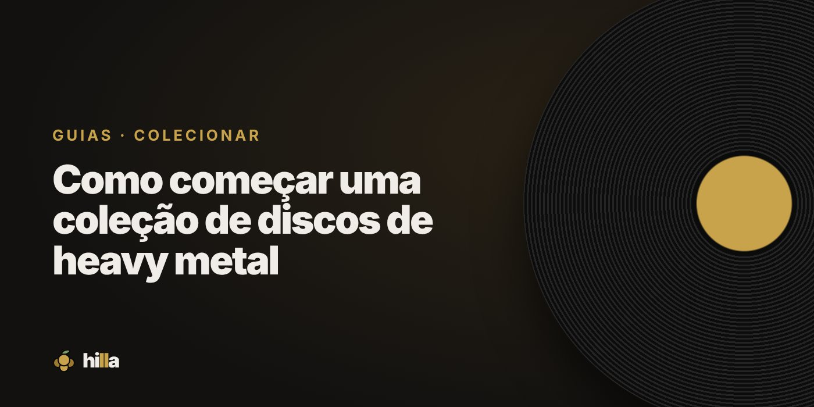

Como começar uma coleção de discos de heavy metal

O heavy metal tem uma das culturas de colecionador mais fortes da música: capas marcantes, edições especiais e fãs que acompanham bandas por décadas. Começar uma coleção é fácil; o difícil é parar.
Comece pelos fundamentos
Alguns álbuns ajudam a entender de onde tudo veio e aparecem em quase toda coleção de metal:
- Black Sabbath — Paranoid (1970)
- Judas Priest — British Steel (1980)
- Iron Maiden — The Number of the Beast (1982)
- Metallica — Master of Puppets (1986)
- Slayer — Reign in Blood (1986)
- Megadeth — Rust in Peace (1990)
- Pantera — Vulgar Display of Power (1992)
Não precisa comprar todos de uma vez. Comece pelos que você já ouve.
Não esqueça o metal brasileiro
O Brasil tem bandas com peso no mundo inteiro, e discos nacionais costumam ser mais fáceis de achar por aqui:
- Sepultura — Beneath the Remains (1989), Chaos A.D. (1993) e Roots (1996)
- Angra — Angels Cry (1993) e Holy Land (1996)
- Krisiun, Korzus, Viper e Ratos de Porão para ir além
Escolha o seu caminho
Metal é um universo de subgêneros. Depois dos fundamentos, vale seguir o que mais te pega: thrash, death, black, doom, power, prog. Cada um tem seus clássicos e suas cenas. Uma coleção focada costuma ser mais satisfatória do que tentar ter um pouco de tudo.
Edições e formatos
- Vinil: capas de metal foram feitas para o tamanho grande. Muitas reedições recentes saem em vinil colorido.
- CD: boa parte do metal dos anos 90 e 2000 saiu principalmente em CD, e eles ainda são baratos.
- Fitas e demos: parte da história do metal circulou em fita. Colecionadores mais dedicados correm atrás delas.
Onde comprar
Lojas e sebos especializados em rock e metal, feiras, shows (bandas costumam vender discos na banca de merch) e o Discogs. Veja mais em Onde comprar discos de vinil no Brasil.
Organize por banda e por fase
Fãs de metal costumam completar discografias. Organizar por banda, em ordem cronológica, ajuda a ver o que falta. Na Hilla, as Lacunas da prateleira mostram os álbuns que faltam de cada banda, e a conquista Superfã acompanha quantos discos você tem do mesmo artista. Para quem quer ir longe, existe a Completista.
Organize sua coleção na Hilla
Grátis. Prateleira, wishlist com prioridades e diário de audições, no celular.